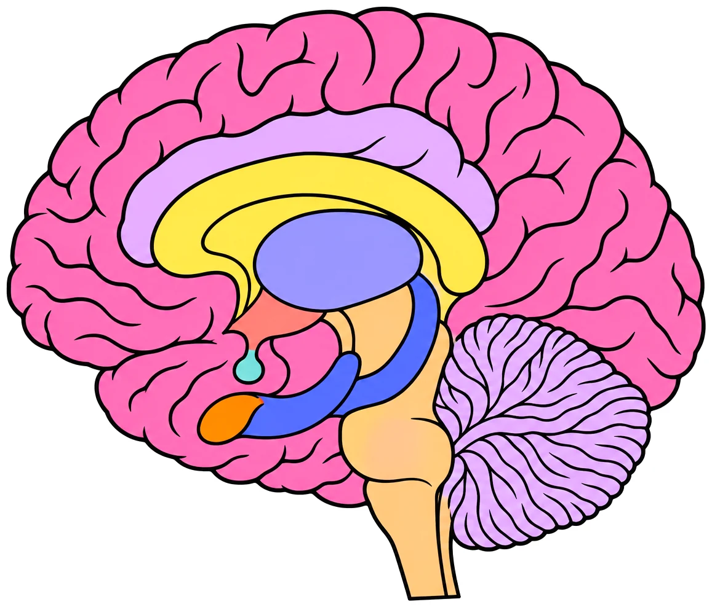
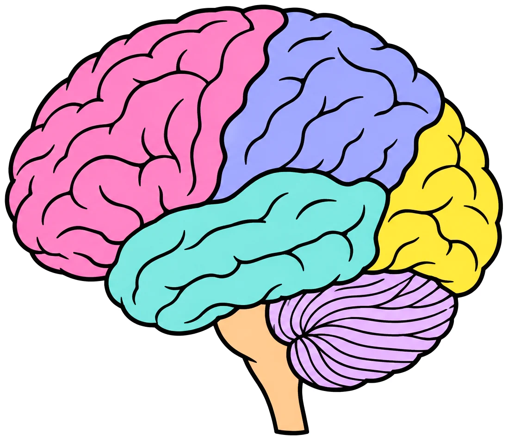
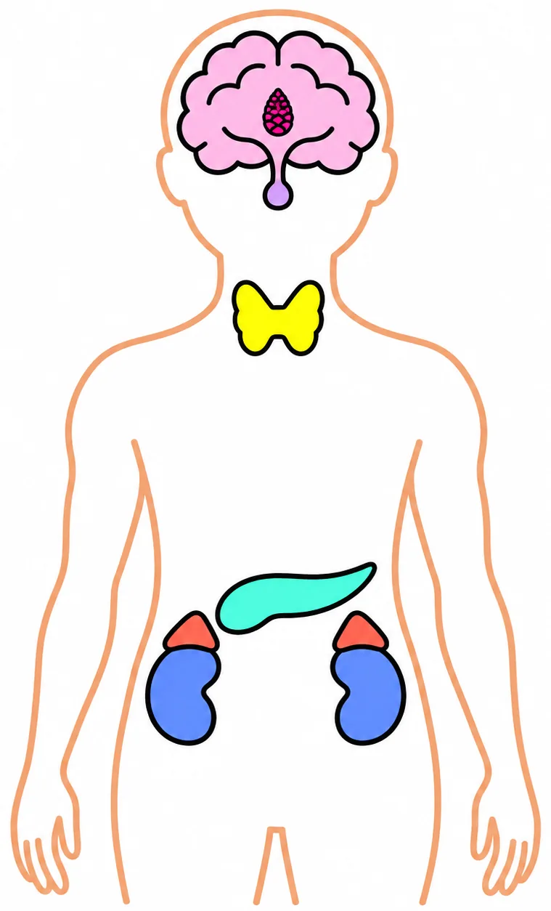
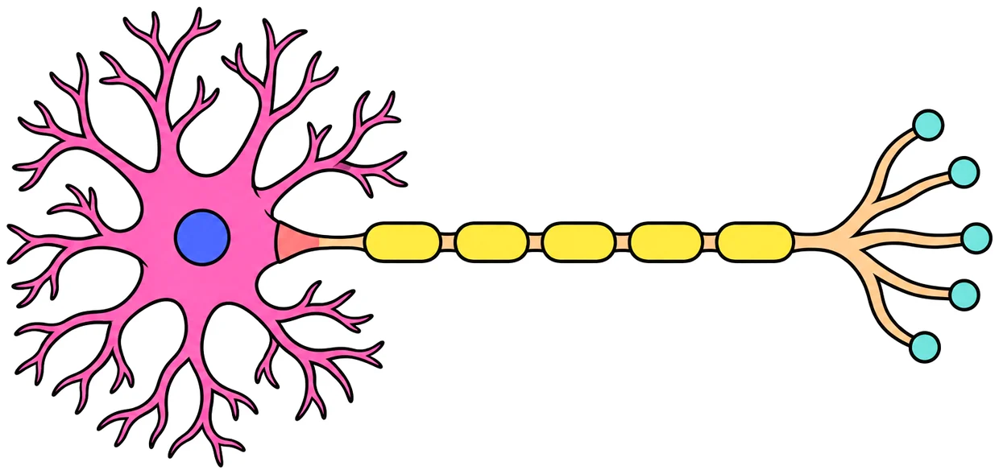
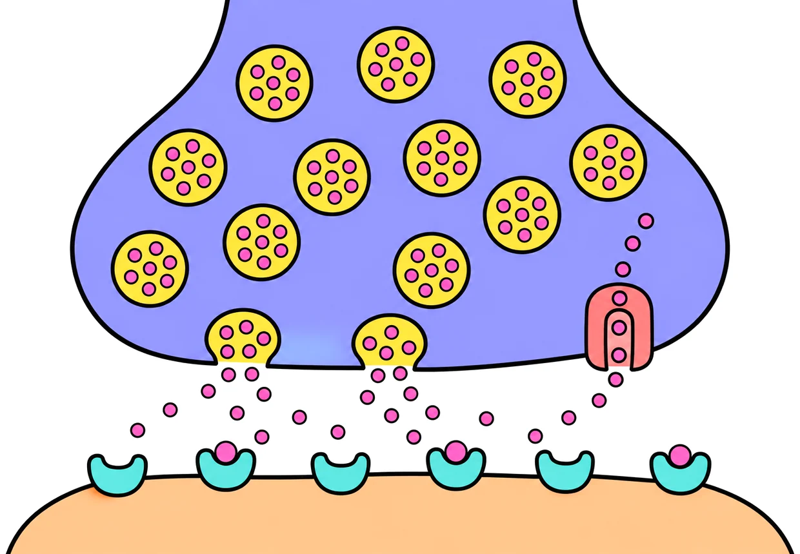

HOSA Canada slidesModule 2 · The Mind (Biological)
The Mind: Biological
Select any text in the notes to highlight it or add a note.
Source HOSA Canada Behavioural Health study slides, Module 2: "The Mind (Biological)", based on Cacioppo, Freberg & Cacioppo, Discovering Psychology, 4th ed.
Overview
- The mind = a way of talking about brain activity, e.g., the thinking mind (cognitive psychology) and the troubled mind (abnormal psychology)
- The Mind decks cover eight approaches: biological, sensation, perception, consciousness, motivation, emotion, learning, memory
- The Mind is 25% of the round-one written test; the slides cover the textbook's main ideas
Nervous system
- Central nervous system (CNS): brain + spinal cord; protected by cerebrospinal fluid (CSF); encased in bone (the PNS is not)
- Peripheral nervous system (PNS): nerves outside the CNS carrying sensory and motor messages to and from the body; not encased in bone
- Sensory neurons: carry information from the world or the body to the CNS
- Motor neurons: carry CNS commands to muscles and glands
- Interneurons: neither sensory nor motor
- Spinal cord: neural tissue from the medulla to mid-back; only ~2% of CNS weight but vital; main route for fibres to and from the brain; continuous with the brainstem; large white-matter pathways; spinal injuries show how vital it is
- Spinal reflex: started by the spinal cord without the brain (e.g., knee jerk)
StimulusFor example, at the knee
Sensory neuronsCarry the information to the spinal cord
Spinal cordStarts the reflex; the brain is not needed
Motor neuronsCarry the command to the muscles
Knee jerkAn automatic, fast response
Brain
- Three parts: brainstem, cerebellum, cerebrum
- Brainstem: lowest part, joined to the spinal cord; holds the medulla, pons, midbrain; with the cerebellum: white-matter pathways, arousal, reflexes, body functions such as heart rate
- Cerebellum: skilled movement and (in humans) complex thinking; balance and coordination; affected by alcohol
- Cerebrum: cerebral cortex + subcortical structures
- Medulla: above the spinal cord; heart rate, breathing, blood pressure; damage usually means a quick death; big fibre bundles pass through it to and from higher brain levels
- Pons: relay between medulla and midbrain; sleep, arousal, facial expressions; links the cerebellum to the rest of the brain
- Midbrain: between the pons and the hemispheres; sensory reflexes, movement, pain
- Reticular formation: brainstem midline; mood, arousal, sleep
Brain
BrainstemLowest part, joined to the spinal cord
MedullaHeart rate, breathing, blood pressure
PonsSleep, arousal, facial expressions
MidbrainSensory reflexes, movement, pain
CerebellumSkilled movement, balance, coordination; affected by alcohol
CerebrumCerebral cortex + subcortical structures
Cerebral cortexThin outer layer of neurons with four lobes
Subcortical structuresThalamus, basal ganglia, hypothalamus, hippocampus, cingulate cortex, amygdala, nucleus accumbens
Subcortical structures ("below the cortex")
- They sit inside the white matter of the cerebral hemispheres
- Thalamus: sensory relay center; arousal, learning, memory
- Basal ganglia: voluntary movement; implicated in Parkinson's disease
- Hypothalamus: motivation and homeostasis; regulates thirst, hunger, temperature, sexual behaviour, aggression
- Hippocampus: forms long-term memories
- Cingulate cortex: above the corpus callosum; anterior part = decision making and emotion; posterior part = memory and visual processing
- Amygdala: in the temporal lobe; emotion, especially fear and aggression
- Nucleus accumbens: reward and addiction (eating, sex, gambling)

1Cerebral cortex: thin outer layer of neurons; four lobes2Corpus callosum: wide fibre band joining the left and right hemispheres3Cingulate cortex: above the corpus callosum; decisions and emotion (front), memory and visual processing (back)4Thalamus: sensory relay center; arousal, learning, memory5Hypothalamus: motivation and homeostasis: thirst, hunger, temperature, sexual behaviour, aggression6Pituitary gland: activates other glands7Hippocampus: forms long-term memories8Amygdala: in the temporal lobe; emotion, especially fear and aggression9Brainstem: medulla, pons and midbrain10Cerebellum: balance and coordination
Cerebral cortex
- Corpus callosum: wide fibre band joining the left and right hemispheres
- Cerebral cortex: thin outer neuron layer of the hemispheres; four lobes with localized functions; it is gray matter; its areas do sensory, motor or association work; some functions are localized, some lateralized
| Lobe | Location | Contains / does |
|---|---|---|
| Frontal lobe | Front | Primary motor, prefrontal, and orbitofrontal cortex, Broca's area; decisions, speech, higher thinking |
| Parietal lobe | Top, between frontal and occipital | Primary somatosensory cortex (touch) |
| Occipital lobe | Back | Primary visual cortex (vision) |
| Temporal lobe | Sides | Primary auditory cortex (hearing); Wernicke's area |

1Frontal lobe: front; decisions, speech, higher thinking2Parietal lobe: top, between the frontal and occipital lobes; touch3Occipital lobe: back; primary visual cortex (vision)4Temporal lobe: sides; primary auditory cortex (hearing)5Cerebellum: balance, coordination and skilled movement; affected by alcohol6Brainstem: lowest part, joined to the spinal cord: medulla, pons, midbrain7Prefrontal cortex: part of the frontal lobe8Broca’s area: in the frontal lobe9Wernicke’s area: in the temporal lobe10Primary motor cortex: in the frontal lobe11Primary somatosensory cortex: in the parietal lobe; touch
Mirror neurons and lateralization
- Early 1990s: Giacomo Rizzolatti's Italian team, studying movement in monkeys, found neurons firing when a monkey reached for a peanut and when it watched the experimenter eat
- Mirror neurons: fire both when acting and when watching the same action; may help us grasp others' actions and intentions
- Human studies use brain imaging, so they see larger "mirror systems" (not single neurons) that help us understand others' actions, emotions, intentions
- Lateralization: a function handled by one hemisphere
- Left hemisphere ↔ right side of the body; right hemisphere ↔ left side
- Hemisphere dominance does not predict occupation or artistic talent
- Lateralization may allow multitasking and may have made language possible, but may explain vulnerability to schizophrenia and autism spectrum disorder
Peripheral and endocrine systems
- Somatic nervous system: sensory input to the CNS; voluntary commands to muscles; sensation and movement; 12 pairs of cranial nerves and 31 pairs of spinal nerves
- Autonomic nervous system: involuntary control of glands, organs, smooth muscle; three divisions
- Sympathetic nervous system: arousal and stress; "fight or flight"
- Parasympathetic nervous system: rest, repair, energy storage; "rest and digest"
- Enteric nervous system: nerve cells in the lining of the gastrointestinal (GI) tract; controls the GI system
- Sympathetic and parasympathetic input usually push an organ in opposite directions (one speeds the heart up, the other slows it down), but the two work together during sex
- Sympathetic fibres leave the thoracic and upper lumbar cord (T1 to L2); parasympathetic fibres leave the brain through cranial nerves III (oculomotor), VII (facial), IX (glossopharyngeal) and X (vagus), and the sacral cord (S2 to S4)
| Target | Sympathetic | Parasympathetic |
|---|---|---|
| Pupil | Dilates | Contracts |
| Salivation | Inhibits | Stimulates |
| Heartbeat | Speeds up | Slows |
| Airway | Relaxes | Constricts |
| Digestion (stomach, liver, pancreas, intestines) | Inhibits | Stimulates |
| Blood vessels | Constricts | — |
| Urination | Inhibits | Promotes |
| Sex | Stimulates orgasm | Stimulates penile erection and labial engorgement |
Nervous system
Central (CNS)Brain and spinal cord, protected by cerebrospinal fluid
Peripheral (PNS)Nerves outside the CNS carrying sensory and motor messages; not encased in bone
SomaticSensory input to the CNS; voluntary commands to muscles
AutonomicInvoluntary control of glands, organs and smooth muscle
SympatheticArousal and stress: “fight or flight”
ParasympatheticRest, repair, energy storage: “rest and digest”
EntericNerve cells lining the GI tract
Sympatheticfight or flightParasympatheticrest and digestDilatesPupilContractsInhibitsSalivationStimulatesSpeeds upHeartbeatSlowsRelaxesAirwayConstrictsInhibitsDigestionStimulatesConstrictsBlood vessels—InhibitsUrinationPromotesStimulates orgasmSexStimulates penile erection and labial engorgement
The two divisions usually push an organ in opposite directions, but they work together during sex.
- Endocrine system: glands releasing hormones into the blood; responds to the nervous system, especially the hypothalamus; arousal, metabolism, growth, sex
| Gland | Hormones | Role |
|---|---|---|
| Pineal gland | Melatonin | Sleep–wake cycle; melatonin induces sleep, is released in the early evening, breaks down in light |
| Pituitary gland | Oxytocin, vasopressin, growth hormone | Activates other glands; oxytocin: breastfeeding; vasopressin: fluid levels; growth hormone: growth, regeneration; controls sex hormones (puberty, fertility) |
| Thyroid gland | Thyroid hormone | Sets metabolic rate; low levels can mimic depression; the hormone can raise or lower metabolism (the chemistry the body needs to stay alive) |
| Adrenal glands | Cortisol | Activated by the pituitary in stress; cortisol = body-wide wake-up message |
| Islets of Langerhans | Insulin, glucagon | In the pancreas; digestion |
| Ovaries (females), testes (males) | Sex hormones | Made and released under the pituitary's control; start puberty, maintain fertility |

1Pineal gland: melatonin: sleep–wake cycle; released in the early evening, breaks down in light2Pituitary gland: activates other glands; oxytocin, vasopressin, growth hormone; controls sex hormones3Thyroid gland: thyroid hormone sets the metabolic rate; low levels can mimic depression4Pancreas: holds the islets of Langerhans: insulin and glucagon5Adrenal glands: activated by the pituitary in stress; cortisol, a body-wide wake-up message
Neurons and communication
- Neuron: cell specialized to send and receive neural messages
- Neurons have what other cells have (a nucleus; a fatty membrane between intracellular and extracellular fluid) plus special branches (axon, dendrites) for sending and receiving information
- Pores through the axon membrane work as channels that let positive and negative ions in and out
- Cell body: central part holding the nucleus; does most of the cell's housekeeping
- Axon: usually sends information on to other neurons
- Dendrite: usually receives input from other neurons
- Myelin: axon insulation for fast conduction

1Dendrites: usually receive input from other neurons2Cell body: central part holding the nucleus3Nucleus4Axon hillock: where the action potential fires at threshold5Myelin: axon insulation for fast conduction6Axon: usually sends information on to other neurons7Axon terminals: release neurotransmitter into the synaptic cleft
- Glia: structural support; form the blood-brain barrier (keeps out toxins); some myelinate neurons; also hold neurons in place and clean up debris; the barrier comes from their tight links with blood vessels
- Two steps: electrical (action potential down the axon), then chemical (neurotransmitter release); the signal runs to the axon terminal, and the released chemicals act on the receiving neuron
- Fluid separates neurons, so the electrical signal can't leap from one to the next; chemical messengers make the crossing
- Resting potential: membrane charge when the neuron is not processing information
- Action potential: the axon's electrical signal; fires at threshold at the axon hillock; travels down the axon to the terminal
- In numbers: resting about −70 mV, threshold about −65 mV, peak about +40 mV, all within a few milliseconds
- Steps: (1) sodium channels open and sodium rushes in (depolarization); (2) potassium channels open and potassium starts to leave; (3) sodium channels close; (4) potassium channels close at the bottom of a dip below resting level (hyperpolarization)
- Refractory period: the stretch right after each action potential, when firing again is harder
1 · Sodium channels openSodium rushes in: depolarization
2 · Potassium channels openPotassium starts to leave
3 · Sodium channels close
4 · Potassium channels closeAt the bottom of a dip below resting level: hyperpolarization
It all happens within a few milliseconds. Right after it comes the refractory period, when firing again is harder.
- Synapse: communication point between two neurons
- Neurotransmitter: chemical messenger across a synapse
- Receptor: membrane channel that interacts with neurotransmitters
- Reuptake: neurotransmitter returning to the axon terminal that released it; after acting on receptors, the molecules go back in through reuptake channels to be recycled and used again
- Release: action potential reaches terminal → calcium influx frees vesicles from protein anchors → vesicles fuse with membrane → neurotransmitter enters the synaptic cleft → vesicle material recycled → vesicles refilled

1Axon terminal: where the action potential arrives2Synaptic vesicles: freed by calcium influx, they fuse with the membrane3Release: neurotransmitter enters the synaptic cleft4Neurotransmitter: chemical messenger across a synapse5Synaptic cleft: the gap the neurotransmitter crosses6Receptor: membrane channel that interacts with neurotransmitters7Reuptake: neurotransmitter returns to the axon terminal that released it8Receiving neuron: the second neuron at the synapse
| Neurotransmitter | Role and links |
|---|---|
| Acetylcholine (ACh) | Neuromuscular junction (interference → paralysis or death); key autonomic transmitter; learning, memory; Alzheimer's disease; also movement; part of many systems behind behaviour; neuromuscular junction = the synapse where nerves command muscles |
| Epinephrine (adrenaline) | Arousal |
| Norepinephrine | Arousal, vigilance; released by the sympathetic system; bipolar disorder, PTSD; also released in the brain; also called noradrenaline |
| Dopamine | Movement, planning, reward; Parkinson's disease, schizophrenia, ADHD |
| Serotonin | Sleep, appetite, mood (closely linked) |
| Glutamate | Excites (steps up) brain activity |
| GABA | Inhibits (calms) brain activity |
| Endorphins | Modify the natural pain response |